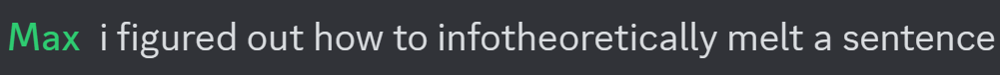

On each line, one character is removed. The removed character should be the one that least changes the meaning of the text. Change in meaning is here operationalized as the semantic distance of the newly generated sentence from the original text according to the sentence embeddding model listed below. Destruction mode reverses the selection criteria. This optimizes for, in Max's words "minimal edits maximally destructive to meaning."